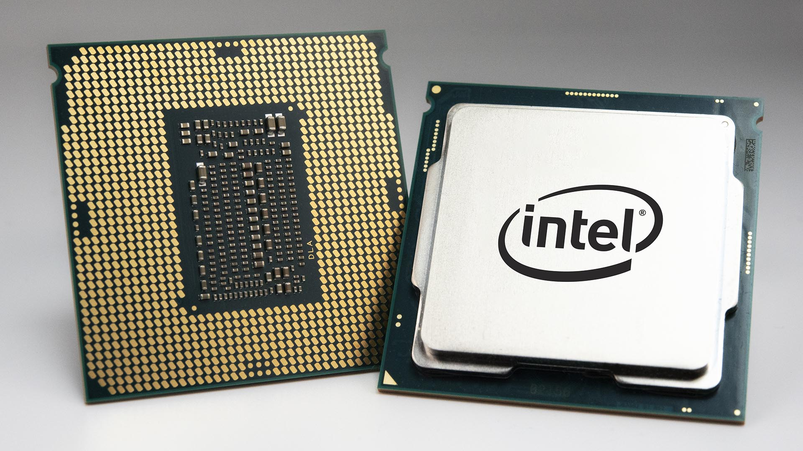
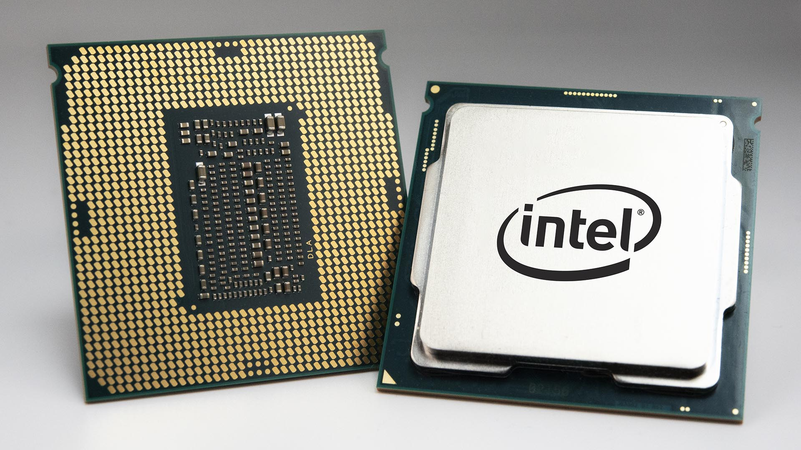
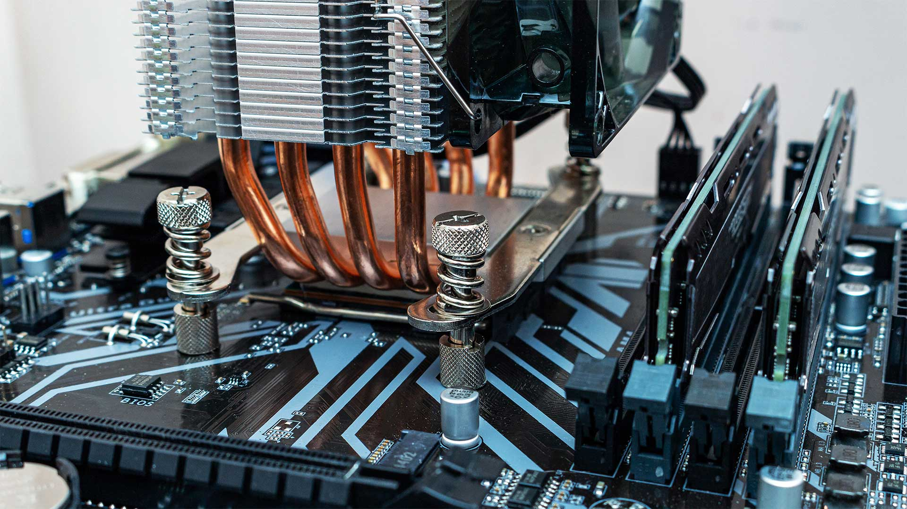
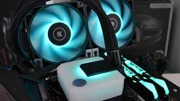
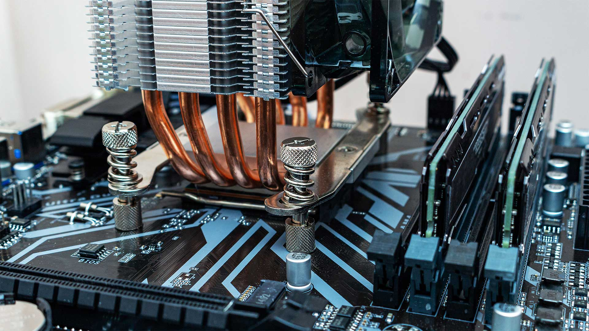
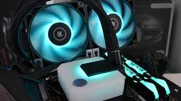

The central processing unit (CPU) is responsible for handling the instructions it is given from both hardware and the software. As stated earlier, having random hardware parts with no way to communicate between them makes them useless. They need to be able to communicate with each other and also have software to allow them to function properly. The CPU is the brain of the computer, without the brain, a human would not be able to function at all. This is exactly how computers are, without a CPU a computer will have no way of processing information across its components and this is why it is an essential part of the computer. The CPU is the most important part of a computer, you must have a good CPU in order to have a great and efficient computer. The CPU is in charge of all the logic and arithmetic operations, so the faster your CPU is the faster your computer can be.
Like mentioned in the motherboard section, there are two manufacturers of computer CPUs: Intel and AMD. When it comes to other devices, there are a lot of other manufacturers that can make their own CPUs but for PCs Intel and AMD are the only ones that have the license agreements to manufacture CPUs. Recently Apple has started to create their own processors for their computers which has found great success for their first generation of processors. Intel had been Apple's processor choice for the last decade and a half but Apple decided they could create a product that competed and even beat Intel's chips. Intel has been the front runner in the power and speed of CPUs but recently AMD has caught up and some argue that they have surpassed Intel.
CPUs have processing cores where it performs the instructions given. Today, CPUs are able to have multiple cores on a single processor. What this means is essentially having multiple processors on a single chip. Today, CPUs tend to average between 4-8 cores, this is great for regular use of a computer but if you want more cores so your processor can handle multiple intstructions at once then you can get CPUs that have 64 cores in them but this is only for people that need to use heavy-duty tasks such as 3d modeling. Another method of seeing how powerful a CPU is by checking its clock speed. The clock speed measures how fast a CPU can retrieve and understand information and instructions. This is measured in GHz (gigahertz), so a processor like the AMD Ryzen 7 3700x has a clock speed of 4.4 GHz. This means it is able to execute 4.4 billion cycles a second. This amount of information takes a lot of energy and is a reason why CPUs tend to overheat if they are not properly cooled. CPUs usually are cooled with some thermal paste and a CPU fan or an AIO (All-in-One). Thermal paste is applied to the back of the CPU and the baseplate of a CPU fan is put on top, the heat produced from the processor is spread to the heat pipes of the fans which spreads to the fans to push the warm air away from the CPU. This is how the CPU is cooled using a fan. An AIO uses a liquid coolant that takes the heat of the CPU and passes through a radiator where it gets cooled and fans push the air out of the system. For a more detailed description of both coolers click the two videos by Gamer Nexus to the right.
 

 


